2026-10-19 사용자 정정에 따른 전체 폐곡선 반복 기준입니다. 실행 결과가 아닌 원본 시안이며, 아래 기존 평면 기준보다 반복 판정에서 우선합니다. 개별 선의 전체 연결은 아직 검증되지 않았습니다.
원본 바이트 보존 · SHA-256 be889493… · 예전 임시 폴더 없이 저장소에서 재현 가능
python qa/experiments/trace-coral-filaments.py로 기존 추적 진단을 재현합니다. 짧은 후보는 여전히 미채택이며, 픽셀 지지도를 선 정체성 검증으로 간주하지 않습니다. 이 페이지는 저장소 내부 QA이며 Preview의 공개 경로가 아닙니다.
개별 선 추적 진단 — 아직 복원 아님
현재 검증 모드는 같은 각도의 경계를 반경 방향으로 복제합니다. 기존 기하 검사는 이 구조의 회귀 확인이며 기준 이미지의 개별 선 대응이나 직조 질감 성공을 증명하지 않습니다.
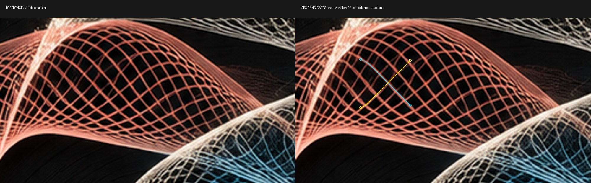
왼쪽: 반복 기준 원본 일부. 오른쪽: 42px 폭 구간의 추적 후보. 긴 추적은 인접 선으로 이동하여 제외했습니다. 노랑 후보의 픽셀 지지도도 부족하므로 두 전체 폐곡선의 복원·채택 결과가 아닙니다.
현재 모델의 각도·순서 제약 · 좌표·불확실성. 실행본은 변경하지 않았습니다. 가려진 구간을 연결하기 전 각 가시 구간의 같은 선 여부를 먼저 확인해야 합니다.
전체 폐곡선 내부 반복 — 검증 모드
내부 반복 검증본 열기 ↗ · 기본 실행본은 유지합니다. 아래는 미완성 구조 검증이며 최종 채택본이 아닙니다.
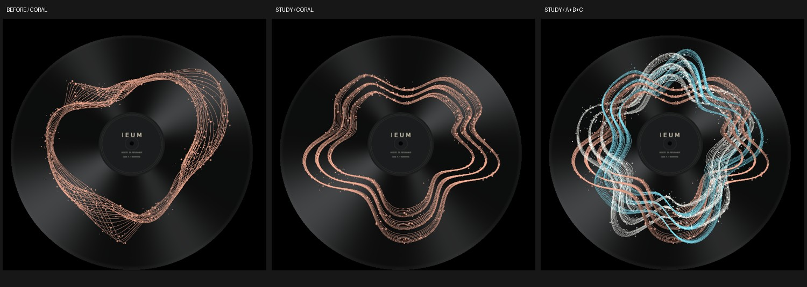
기존 코랄 / 전체 폐곡선 내부 반복 / 3명 합성. 반복 간격과 교차가 규칙적이고 선 결이 성긴 차이가 남습니다.
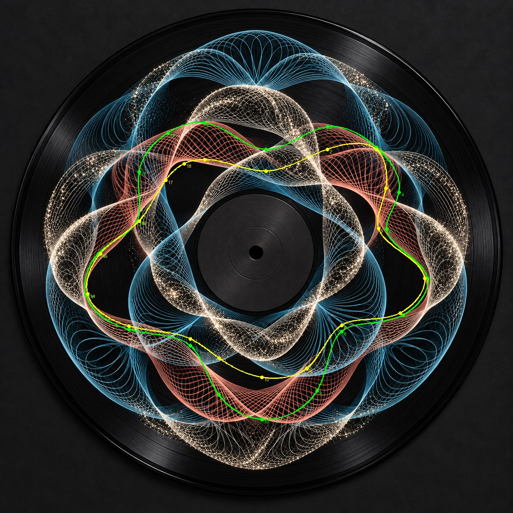
반복 기준 「삼색 직조 공명 바이닐」 위의 수동 추정 경계. 가려진 부분은 추정이며 개별 선 복원의 정답이 아닙니다.
큰 굴곡진 폐곡선 형태 자체가 안쪽에 이어지는 관계를 확인합니다. 단순한 폭 변화·작은 고리 나열을 성공으로 판정하지 않습니다. 아래 섹션과 영상은 이전 기본 모드의 자료이며 새 검증 모드의 결과로 사용하지 않습니다.
이전 기본 모드의 2D 참고 및 렌더
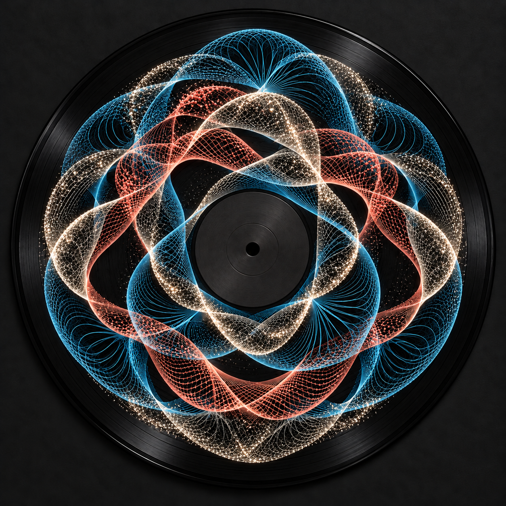
이전 2D 참고 이미지. 최신 내부 반복 성공 기준과 구분합니다.
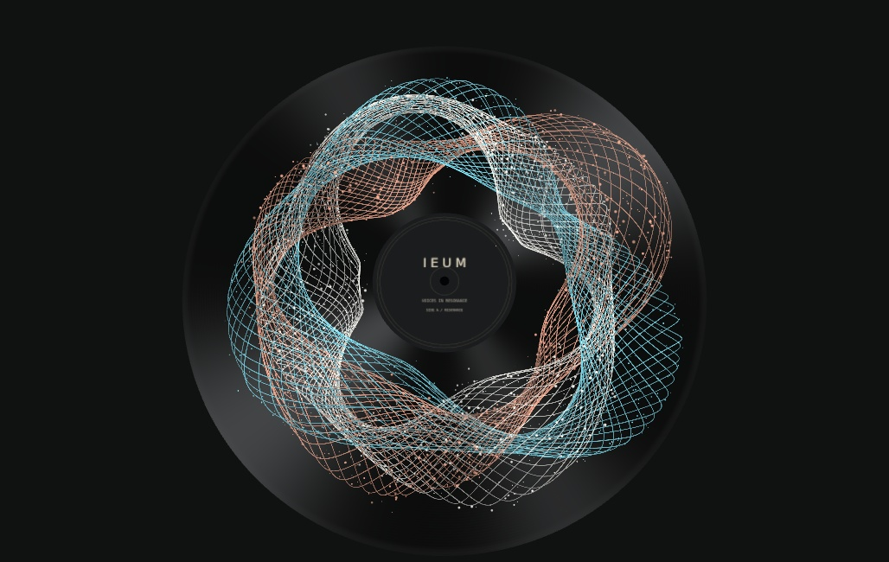
새 2D 경로의 실제 3명 WebGL 렌더. 선과 입자만 사용합니다.
평면 모드는 고유 보컬 특성을 사용하는 닫힌 경로로 이어지며, 다발 내부의 교차를 유지하면서 반경·원주 방향이 함께 모이도록 보정했습니다. 3D 경로와 연속 보간됩니다. brightness/air/phase에 따라 국부 접힘과 입자 크기·밝기 군집을 보정했습니다. 보컬 특성에 따라 수렴 간격과 선별 국부 굽힘도 달라집니다. 선마다 펼침의 상대 위상을 달리하고 평면 입자의 국부 군집을 보정했습니다. 기준보다 둥근 반복 고리가 부족하고 일부 구간은 각지거나 평행하게 읽히는 차이가 남아 있습니다.
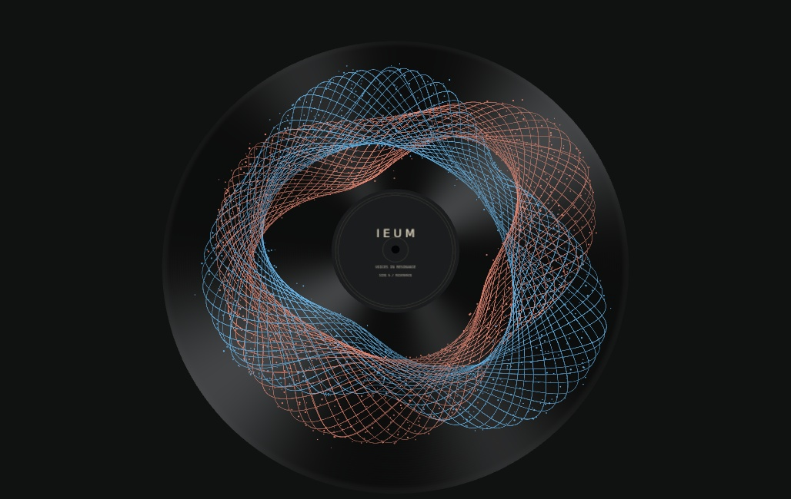
2명 합성
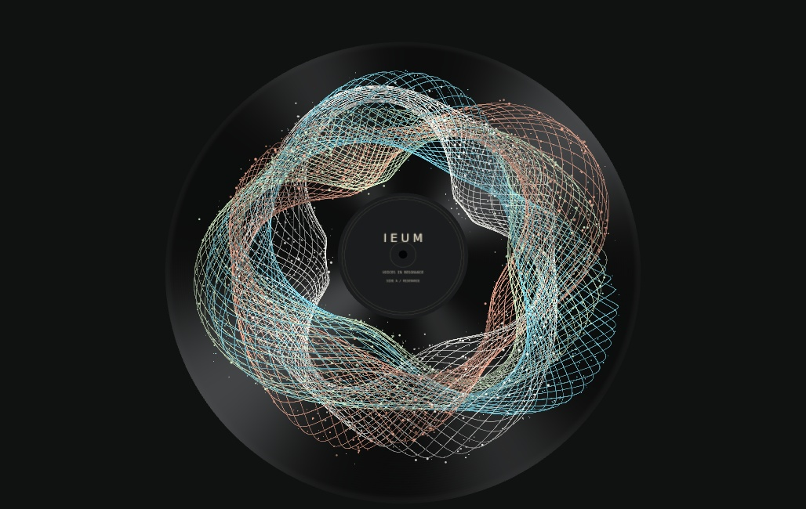
4명 합성
기존 3D 기준과 구현
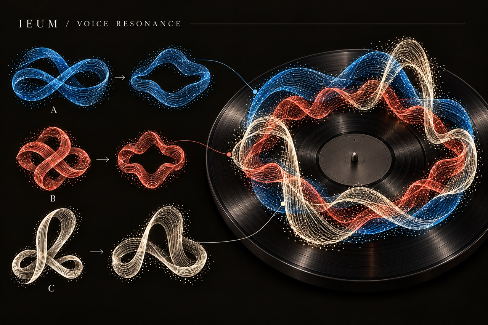
사용자가 승인한 선·입자 매듭 기준. 구현 화면이 아닙니다.실제 3명 합성 렌더. 표면 재질 없이 선과 입자로 구성.
개인의 세 가지 서로 다른 매듭, 높이 차이, 닫힌 레코드 흐름과 교차를 구현했습니다. 기준 이미지의 불규칙한 미세 접힘과 풍부한 산포에 비해 현재 구현의 선 결은 더 정돈되어 있습니다. 픽셀 단위 일치나 최종 시각 승인 완료를 주장하지 않습니다.
개인별 차이
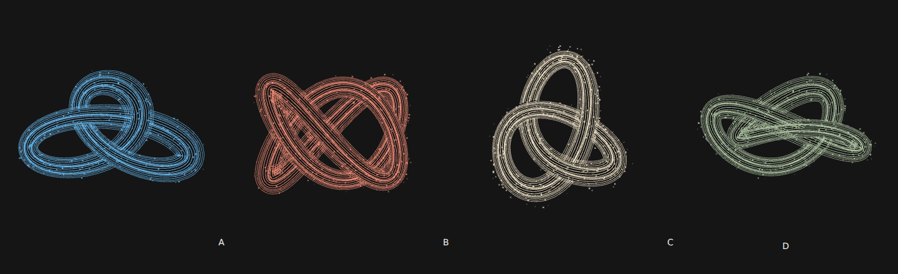
앱에서 사용하는 동일한 SVG 생성 함수를 실제 브라우저에 렌더했습니다. 색상 외에도 A의 넓은 고리, B의 촘촘한 교차, C의 높은 고리, D의 비대칭 접힘이 다릅니다.
참여자 합성
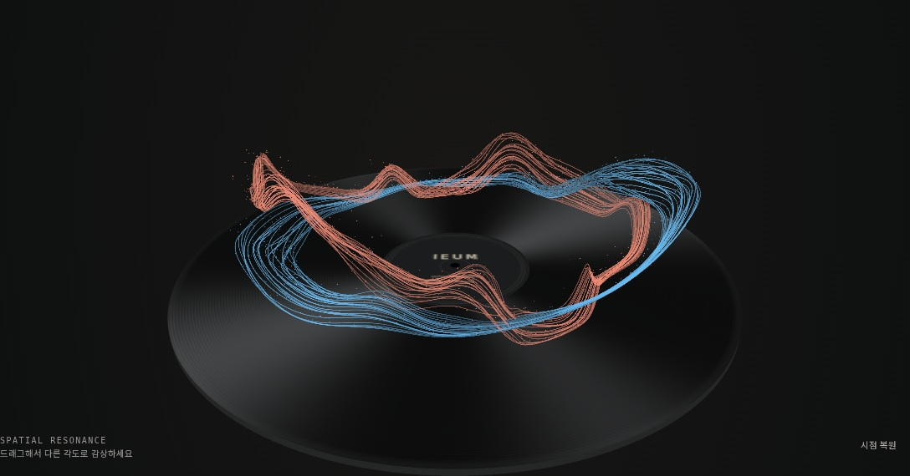
2명
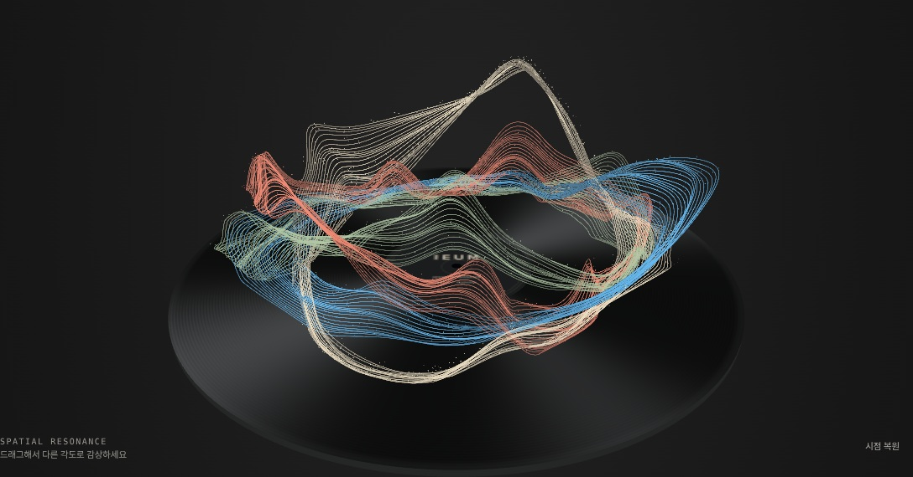
4명. 기존 중심 경로와 입자 위상을 보존하며 접촉부 밀도를 갱신합니다.
평면과 높이
2D3D
이전 2D 빌드의 실제 Motion
c91dbd99… 이전 빌드의 실제 캔버스와 Web Audio 데모 출력입니다. 재생 전·중·일시정지를 포함하며 모션 보간은 하지 않았습니다. 소프트웨어 렌더러의 프레임 지연이 포함됩니다. MP4의 오디오 시작은 5.338초, 길이는 약 12.923초입니다.
이전 3D 빌드의 실제 Motion
실제 WebGL 캔버스와 Web Audio 출력 녹화. 대기 → 합성 데모 신호 재생 → 일시정지 순서입니다. 정지 이미지를 보간한 영상이 아닙니다. 정확한 전환 시점은 motion-verification.json에 있습니다.
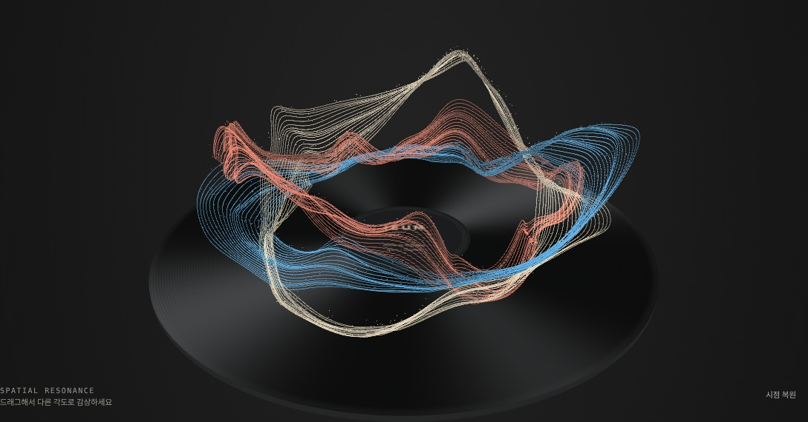
재생 중
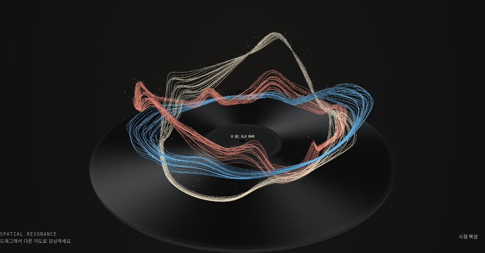
일시정지 후
실행 화면
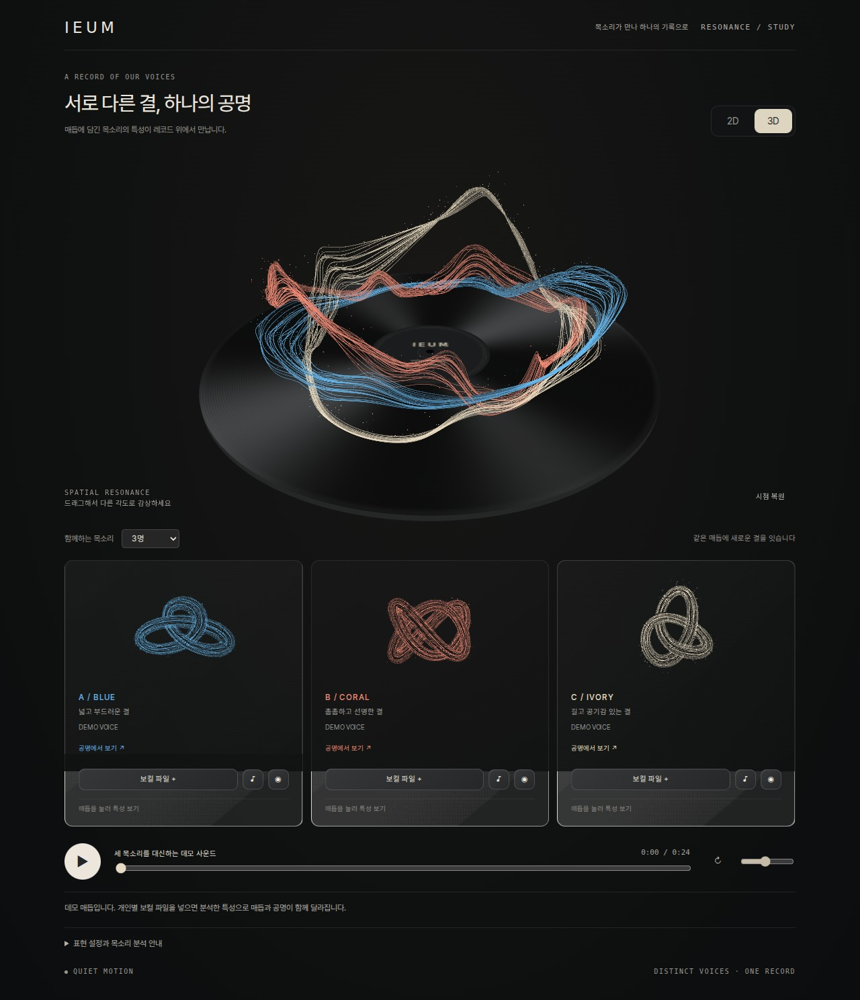
데스크톱
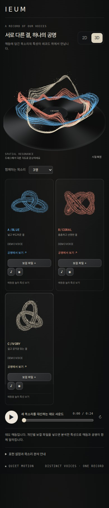
390px 모바일 뷰포트. 실제 휴대폰 측정은 아닙니다.
검증 환경: Linux headless Chromium / SwiftShader. 기능 검사와 시각 판단은 별도로 기록합니다. 상세 결과는 PROGRESS.md와 *verification.json을 확인하세요.